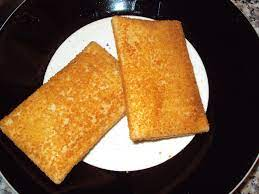

Kaassoufle

The cheese snack also called "kaassoufle" in the
netherlands.
De kaassoufflé is in 1969 bedacht door de
Haastrechtse snackbareigenaar Hans van Bemmel en een plaatselijke bakker.
Met ondernemer Dick Kooijman werd het bedrijf KB opgezet.
KB Foodservice werd in 2008 overgenomen door snackproducent Royaan.
In 2016 werd Royaan overgenomen door snackproducent Van Geloven.
Zij hadden in 2012 op het gebied van kaassoufflés een marktaandeel van 90%-100%.
Ingredienten
- 3 eiwitten
- 3 eetlepels paneermeel
- zout
- 125 gram geraspte belegen kaas
- zout
- 1 eetlepel boter
- 100 gram kwark
- nootmuskaat
Stappen
- Klop de (3)eiwitten stijf in een vetvrije kom.
Meng de (1 eetlepel) boter met (3 eetlepels) paneermeel en (100 gram) kwark door elkaar.
Breng het op smaak met (1 stuk) zout en (1 stuk) nootmuskaat.
- Voeg het eiwit toe.
- Bestrooi het met de geraspte kaas(125 gram) en meng het voorzichtig door elkaar.
- Vet 4 vuurvaste vormpjes in met boter(1 eetlepel) en schep het mengsel in de vormpjes.
Verwarm de oven voor op 200 graden C.
- en bak de soufflé 15 minuten in het midden van de oven.